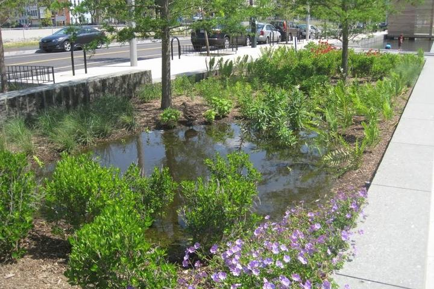
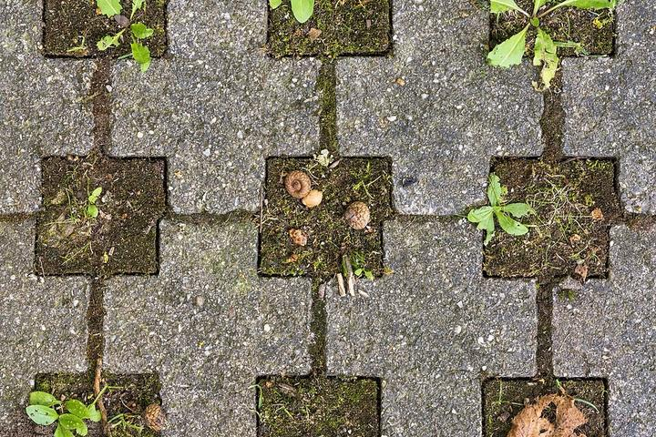
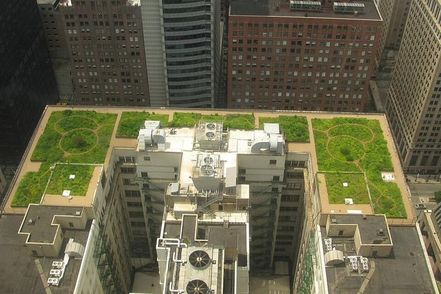
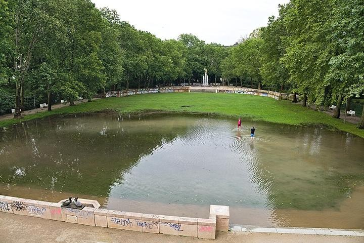

Jardim de chuva
Canteiro rebaixado que recebe a enxurrada da rua e deixa infiltrar.
Até 150 L por m² · Hinman, 2007Inteligência ambiental urbana · Hack Brasil 2026
Transformamos dados ambientais e geográficos em oportunidades de infraestrutura verde para cidades mais resilientes. Começando por Sorocaba.
Nosso objetivo
Não apenas identificar onde alaga. Descobrir onde a cidade pode se tornar mais resiliente.
Uma plataforma para entender, planejar e agir por uma cidade que segura melhor a água da chuva.
Cruza registros da Defesa Civil, relevo, rios e características urbanas.
Localiza praças, estacionamentos, terrenos e telhados que podem ser investigados.
Apresenta alternativas verdes compatíveis com cada área.
Compara escoamento e retenção, com premissas e fontes visíveis.
Os 15 relatórios da Defesa Civil de 2022 e 2023 mostram que as ocorrências se repetem nos mesmos lugares.
Passe o mouse em uma rua para ver em quantos relatórios ela aparece.
Contagem por rua feita pelo time a partir dos relatórios COMPDEC; nenhum endereço individual é publicado. Detalhes em Fontes.
Infraestrutura que imita a natureza: em vez de mandar toda a chuva para o bueiro, segura e infiltra parte dela.

Canteiro rebaixado que recebe a enxurrada da rua e deixa infiltrar.
Até 150 L por m² · Hinman, 2007
Pavimento que deixa a água passar para uma camada de brita.
Até 50 mm de chuva · PMSP, 2013
Cobertura com vegetação que retém parte da chuva e solta devagar.
Retém 47–62% · Vacari et al., 2019
Área verde feita para encher na chuva forte e esvaziar depois.
Volume calculado pelo relevoÁreas candidatas a estudo, não obras decididas. A plataforma ajuda a Defesa Civil e a prefeitura a escolher por onde começar.
O cálculo pesado roda uma vez no pipeline. A plataforma só mostra o resultado, por isso é rápida e não quebra.
Entradas
Processamento (Python)
Verificação
Saída
Sobre o HAND. Mede a altura de cada ponto em relação à rede de drenagem mais próxima. Pontos baixos tendem a acumular água, mas o HAND sozinho não determina onde vai inundar. Por isso ele é combinado com os registros reais e conferido contra eles.
Validação. Medimos que porcentagem dos registros cai nas faixas de risco alto e médio, no piloto e na cidade inteira. O resultado aparece na plataforma, seja ele bom ou ruim.
Limites. Os registros estão agrupados por rua, não por endereço. As estimativas de retenção são contas com premissas da literatura, não modelagem hidráulica.
Todo número da plataforma aponta para a origem.
15 relatórios COMPDEC de 2022–2023, publicados como anexo do TCC de M. C. Vargem (Unesp, 2024). Usados para contar registros por rua.
Modelo de relevo de 30 m que mede o chão, sem prédios e árvores. Base do cálculo do HAND.
Ruas, rios, praças, estacionamentos e edificações. Base das áreas candidatas e do mapa.
Moradores por setor censitário, para estimar quantas pessoas vivem perto de cada área.
Carta de suscetibilidade a inundações de Sorocaba (2014), usada para comparação.
PMSP ETS-03/2013 (piso permeável), Hinman, WSU 2007 (jardim de chuva), Vacari et al. 2019, UFMT (telhado verde).
Fotos: Wikimedia Commons. Jardim de chuva: U.S. EPA (domínio público). Piso permeável: Roman Eisele (CC BY-SA 4.0). Telhado verde: TonyTheTiger (CC BY-SA 3.0). Parque alagável: Leonhard Lenz (CC0). Recortadas e reduzidas.
Filtre por tipo de ocorrência, busque uma rua e compare soluções com premissas visíveis.
Abrir plataforma →